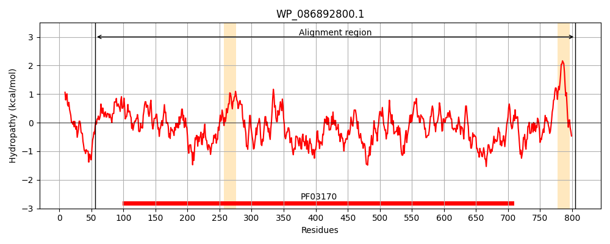
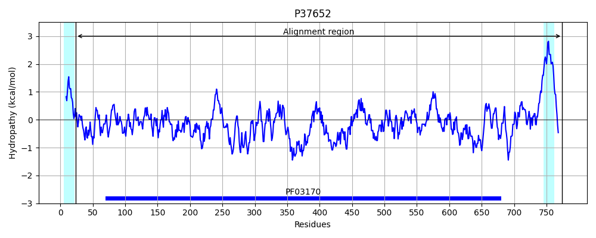
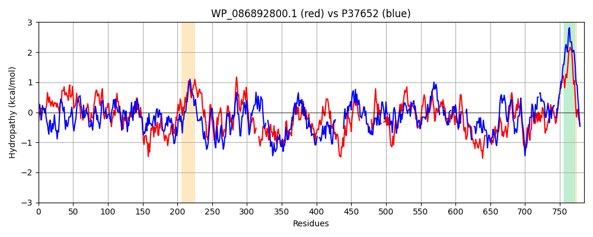

Hit Accession: P37652
Hit TCID: 4.D.3.1.6
Hit Description: gnl|BL_ORD_ID|10122 gnl|TC-DB|P37652|4.D.3.1.6 Cyclic di-GMP-binding protein OS=Escherichia coli (strain K12) GN=bcsB PE=1 SV=2
Mach Len: 785
e:0.000000
Query TMS Count : 2
Hit TMS Count: 2
TMS-Overlap Score: 0.900000
Predicted Substrates:CHEBI:3529;(1->4)-beta-D-glucan
BLAST Alignment:
Score: 693 , Bit scores: 271 bits, E-value: 2.1e-79, Alignment length: 785, Percentage identity: 28
Query: 56 EATPAVAP---APAGDAALTTPVPEMPAVTPPVSDTVAPDVIPVAPVWGGDLNLAQMGMPDG-IILSGGQRQGGVSFTLPSDQVVIHSQLSLAVRVSPEMASRNATLQLMLNGQPLGTLPLGADGEDVSHY-QLDIPPALMVSSNNLSVKINDGDTLQCQRDIHDSSRVTVLPTSHFSWESQQLNISDDLSHFPRPFFDSMQMTPADIAVAYGAKPSADVFSAAALVSSWLGIQADYRGIAFSALRDRLPERHGIVIGHPGEQVGGMT-LPETDKPLLRIIANPANPAYKLLLIVGKNDMALRMAAWRLTRGNF---APQTATQDVEPQTIPVGKAYDAPRWIPTDRPVRLSELLRKDQSPTVSGVWHEPLRIAFRAAPDLYLWDGETIPLQVGYRFPSESWINEDKSLLSVTLNGTFLNNLAMNKQGPLEKVWRHLGGDARQERFTIPLAPYLIYGDNQLSM----------------YFNVVPKDDVPCSVL---LNNNIKSRITDDSWIDLSKTRHFSLLPNLSYFVGASFPFSRLADYSQTTLMLPADPSETQVATLLNLAARSGNATGTALANNRVVLGMPTGGADLQSLRERDVLAVTALDQQAFNQSLLADSPYRPVDNTLSVREPDLWQKVQRRLT------GDWTSASLDADRYFSSSSAWRGFISYRSPWNATRLVVVAMASNDDQLARLKTDLDSPRINAGIRGDTAVITSDNGVRSFQVSTPFPSGQMPWYMMAVWYA-SQHSGFLAVLGLIATSIMGLALTAMFKRHARKRL 805
+ATPA P A AA T P++ V P V AP V P L AQ+ P G ++L G G + F + SD+VV + L+L SP + + L++ LN + +G LP+ + Q+ I P + N + ++ C++ + + V +S Q LN+ +DLSHFP PFFD + + + P + A+A+V+SW G ++ +RG F L ++LP+R+ IV ++ + P P++ +I +P NP KLL++ G++D L AA + +GN +V+P + K YDAP W+ TDRPV EL ++ SG+ + ++ PDLYL I + + YR+ +D S + ++LN FL + ++ + +A + IP+ L+ G +S+ Y N +P V + + N++ I DDS ID SK HF +P+L F A FPFSR+AD SQT ++P P+E Q+ TLLN G TG N L + G+ +Q ++ D++ + + + L D + +D L V+ + W K R T D + + + +SS A I ++SP+N R V+ +A + L ++ A + G AVI ++G+ S +V + G +PW+ VWYA + H LAVL I+ ++ L + + +R+RL
Sbjct: 24 QATPATQPLINAEPAVAAQTEQNPQVGQVMPGVQGADAPVVAQNGPSRDVKLTFAQIAPPPGSMVLRGINPNGSIEFGMRSDEVVTKAMLNLEYTPSPSLLPVQSQLKVYLNDELMGVLPVTKEQLGKKTLAQMPINPLFISDFNRVRLEFVGHYQDVCEKPASTTLWLDVGRSSGLDLTYQTLNVKNDLSHFPVPFFDPSDNRTNTLPMVFAGAPDVGLQQASAIVASWFGSRSGWRGQNFPVLYNQLPDRNAIVFATNDKRPDFLRDHPAVKAPVIEMINHPQNPYVKLLVVFGRDDKDLLQAAKGIAQGNILFRGESVVVNEVKP--LLPRKPYDAPNWVRTDRPVTFGELKTYEEQLQSSGLEPAAINVSLNLPPDLYLMRSTGIDMDINYRYTMPPV--KDSSRMDISLNNQFLQSFNLSSKQ-----------EANRLLLRIPVLQGLLDGKTDVSIPALKLGATNQLRFDFEYMNPMPGGSVDNCITFQPVQNHVV--IGDDSTIDFSKYYHFIPMPDLRAFANAGFPFSRMADLSQTITVMPKAPNEAQMETLLNTVGFIGAQTGFPAIN----LTVTDDGSTIQG-KDADIMIIGGIPDK------LKDD--KQID--LLVQATESWVKTPMRQTPFPGIVPDESDRAAETRSTLTSSGAMAAVIGFQSPYNDQRSVIALLADSPRGYEMLNDAVNDSGKRATMFGSVAVI-RESGINSLRVGDVYYVGHLPWF-ERVWYALANHPILLAVLAAISVILLAWVLWRLLRIISRRRL 774 | Protein Hydropathy Plots: |
|---|
|  |  |
Pairwise Alignment-Hydropathy Plot:
|
|---|
|  |